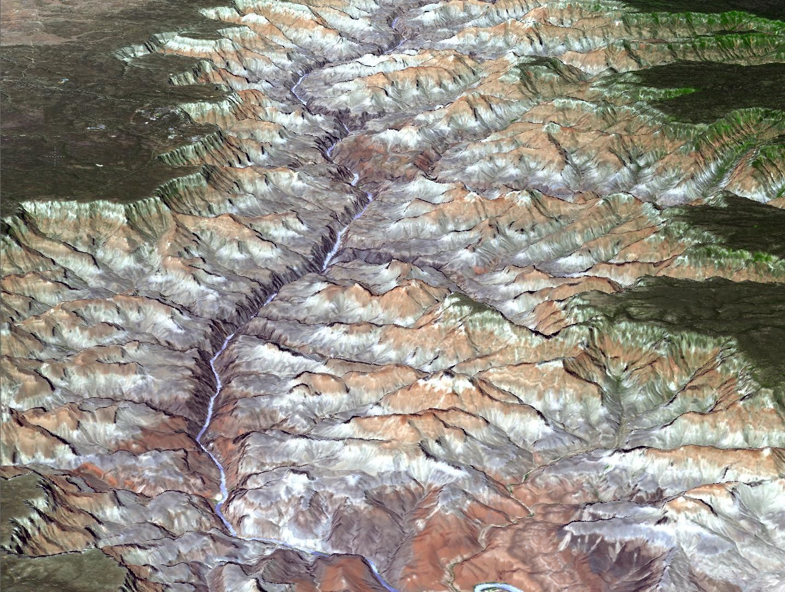

Part 1: Planet Earth · Chapter 4 of 15
The Outer Layers
A thin, broken skin that records the planet's history.

The boundary between the crust and the mantle is called the Moho, after the Croatian seismologist Andrija Mohorovičić, who found it in 1909. He noticed that earthquake waves suddenly sped up at a certain depth, a sign that they had passed into denser rock.
Continental crust and oceanic crust are very different. Oceanic crust is thin, dense and dark, made mostly of basalt, and is young by geological standards: almost none of it is older than about 200 million years. Continental crust is thicker, lighter and very varied, and parts of it are more than 4 billion years old.
Squeezed, stretched and buried
Because the lithosphere is broken into moving plates, it is constantly under stress. Where it is stretched, it cracks and thins. Where it is squeezed, it can buckle and fold into mountain ranges, or crack suddenly in an earthquake.
At the same time, the surface is being worn down. Rivers, glaciers and wind carry grains of rock away and lay them down as sediment in lakes, deltas and on the sea floor. As layer upon layer builds up, the lower layers are pressed and cemented into new rock.
Because each layer records the conditions when it formed, a sequence of rock layers is like an archive. Reading that archive, working out what happened, in what order and when, is the core of geology.
Key terms
- Moho
- The boundary at the base of the crust. It was discovered by studying how earthquake waves travel.
- borehole
- A narrow, deep hole drilled into the ground to study or extract rock, water or oil.
- sediment
- Sand, mud and other particles carried by wind, water or ice and laid down in layers.
- deposit
- To lay down sediment in a new place. The material that is laid down is also called a deposit.
- stress
- A force that squeezes or stretches rock. Too much stress makes rock crack.
- buckle
- To bend and crumple under pressure, as rock layers do when squeezed for a long time.
- geology
- The science of rocks and of the earth’s history, which is recorded in its rocks.
Check your understanding
Think of your answer, then open each question to compare.
What is the Moho?
The boundary between the crust and the mantle, found from a sudden change in the speed of earthquake waves.
Why is almost no oceanic crust older than about 200 million years?
It is continually made at mid-ocean ridges and destroyed where it sinks back into the mantle at ocean trenches.
How does sediment become rock?
Layers build up, and the lower ones are compressed and cemented together over time.